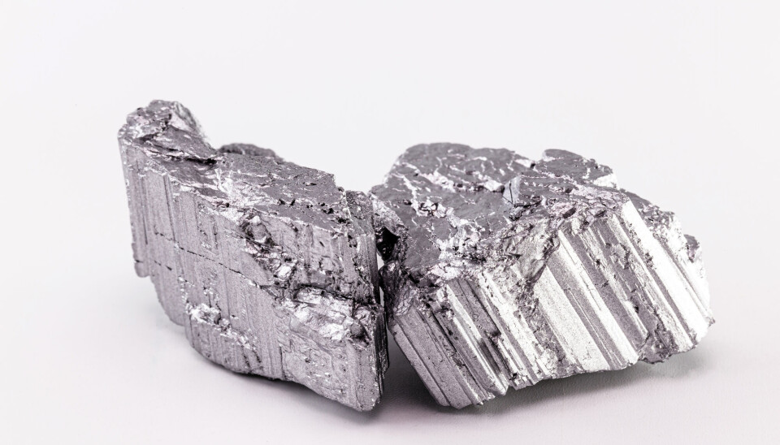
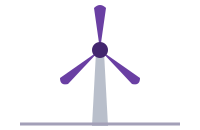
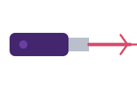

Eletrônicos e áudio
Fones, caixas de som e discos rígidos. Os superímãs de Nd2Fe14B permitem alto-falantes compactos com excelente fidelidade sonora e atuadores de HDs.
Pesquisa científica · Química
O metal terra-rara que dá força aos ímãs mais potentes do mundo: dos fones de ouvido aos carros elétricos e às turbinas eólicas.
Conhecer o elementoAparência: metal prateado e brilhante. Reage com o ar e, ao oxidar, ganha uma tonalidade amarelada ou acinzentada.
Propriedades: é reativo, maleável e dúctil. Combinado com ferro e boro (Nd2Fe14B), apresenta propriedades ferromagnéticas muito elevadas.

O químico austríaco Barão Carl Auer von Welsbach separa o neodímio e o praseodímio de uma mistura chamada didímio, usando cristalizações fracionadas sucessivas e análise espectroscópica.
O neodímio é isolado como metal puro.
O nome vem do grego neos didymos, que significa “novo gêmeo”.
O neodímio não é encontrado livre ou puro na natureza: aparece sempre combinado com outros elementos.
Suas principais fontes são a monazita (presente nas areias monazíticas) e a bastnasita, dois minerais ricos em terras-raras.
Fones, caixas de som e discos rígidos. Os superímãs de Nd2Fe14B permitem alto-falantes compactos com excelente fidelidade sonora e atuadores de HDs.

Motores síncronos de veículos elétricos e geradores de turbinas eólicas, com mais eficiência energética e menor peso.

Lasers cirúrgicos Nd:YAG usados em dermatologia e oftalmologia, e vidros filtrantes de óculos de soldador, que absorvem raios infravermelhos.
Importância econômica: mineral de grande valor estratégico e geopolítico para a transição energética e para tecnologias de ponta.
Se uma criança engolir vários ímãs de neodímio, a atração entre eles no trato gastrointestinal pode causar perfurações intestinais. Sais de neodímio são moderadamente tóxicos e irritam olhos e pele.
A extração pode gerar rejeitos com elementos radioativos, como o tório. Por isso crescem as pesquisas sobre mineração urbana e reciclagem de superímãs.
Professores responsáveis pelo trabalho interdisciplinar.
 Foto da Elaine
Foto da Elaine Foto do Allan
Foto do AllanAluno do 2º DS B na Etec Guaianazes. Este site é a 2ª etapa do trabalho interdisciplinar de Química e PWII.
Sou estudante de Desenvolvimento de Sistemas. Gosto de estar sempre aprendendo coisas novas e desenvolvendo minhas habilidades.